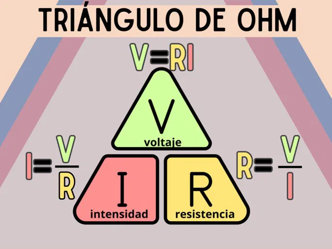

El movimiento rectilíneo uniforme (MRU) es un movimiento que se realiza sobre una
línea recta, a velocidad constante (con magnitud y dirección constantes).
Se denomina trayectoria al recorrido que describe un objeto al desplazarse de un punto a
otro. La física clasifica los movimientos por su trayectoria:
Rectilíneo. Se realiza en una única dirección.

|

🔹 2. Movimiento rectilineo Uniformemente Acelerado (MRUA)
El movimiento rectilíneo uniformemente acelerado (MRUA) es el movimiento
de una partícula o cuerpo por una línea recta con una aceleración constante. Es decir:
• La partícula se desplaza por el eje de coordenadas.
• La velocidad aumenta (o disminuye) de manera lineal respecto al tiempo. Es
decir, la aceleración es constante.

|
Las leyes de Newton, también conocidas como leyes del movimiento de Newton, son tres principios que describen la relación entre la fuerza y el movimiento de los cuerpos. Estas leyes revolucionaron la física clásica y son fundamentales para entender cómo se mueven los objetos.
Las tres leyes de Newton son:
1. Primera Ley o Ley de la Inercia:
Un objeto en reposo permanecerá en reposo, y un objeto en movimiento continuará moviéndose a velocidad constante en línea recta, a menos que una fuerza externa actúe sobre él.
2. Segunda Ley o Ley Fundamental de la Dinámica:
La aceleración de un objeto es directamente proporcional a la fuerza neta que actúa sobre él e inversamente proporcional a su masa. La fórmula es F = ma (Fuerza es igual a masa por aceleración).
3. Tercera Ley o Ley de Acción y Reacción:
Por cada acción, hay una reacción igual y opuesta. Es decir, si un objeto ejerce una fuerza sobre otro, el segundo objeto ejercerá una fuerza de igual magnitud y dirección opuesta sobre el primero.

|
La Ley de Ohm establece la relación entre tres magnitudes físicas
fundamentales en electricidad: voltaje (V), corriente (I) y resistencia (R). En
esencia, la ley afirma que la corriente que fluye a través de un conductor es
directamente proporcional al voltaje aplicado e inversamente proporcional a la
resistencia del conductor. Matemáticamente se expresa como: V = I * R.
|  |
La Ley de Ohm es fundamental en el diseño y análisis de circuitos eléctricos. Se utiliza para:
🟣 Calcular la corriente que fluye a través de un componente si se conoce el voltaje y la resistencia.
🟣 Determinar la resistencia de un componente si se conoce el voltaje y la corriente.
🟣 Entender cómo diferentes componentes afectan el comportamiento de un circuito.

|

|

|